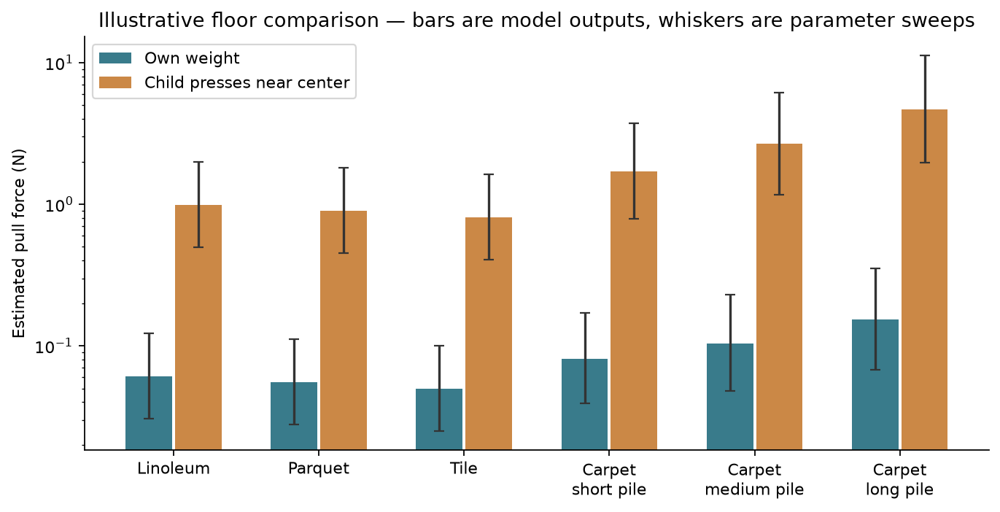
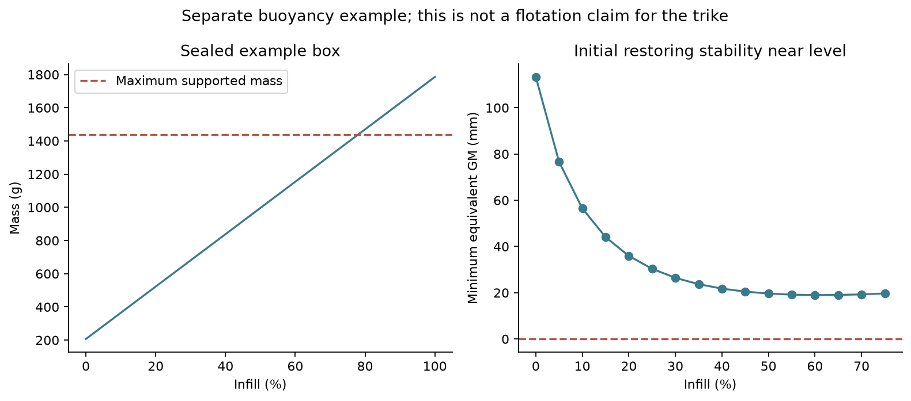
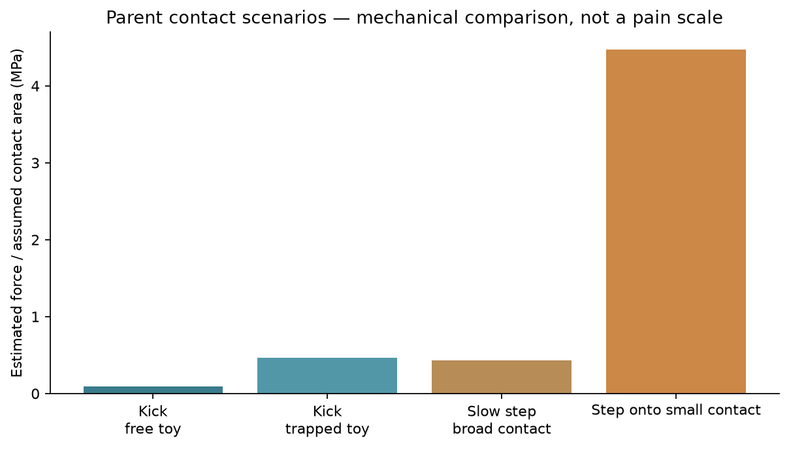

A reusable N-wheel model, with a separate hydrostatics module. Vehicle: Trike MINI v06. Input provenance is recorded in the vehicle JSON.
PLA is the default. Change material.json or use python run.py --material PETG --output reports/petg. Use --density-g-cm3 1.25 for a measured or manufacturer-specified density. Full inputs and resolved properties are stored in results.json.
| Selected material | Density (g/cm³) | Print axis | Strength factor | Modulus factor | Safety factor | Stress concentration |
|---|---|---|---|---|---|---|
| PLA | 1.24 | XY | 0.5 | 0.7 | 2.0 | 1.5 |
Reference products: Bambu PLA Basic and PETG HF. Coupon data do not establish the strength of this print. The factors above are editable assumptions. See properties, sources and override rules. Density changes mass and buoyancy; it does not directly determine strength. Sum of polymer volume times selected density, plus fixed masses.
Same geometry and factors; global density/modulus/strength overrides excluded. Explicit per-part properties and fixed masses still apply. Axle utilization covers the supplied loads on Linoleum; tipping cases have no supported axle result. Buoyancy refers to the separate first floating example.
| Material | Density (g/cm³) | Toy mass (g) | Max axle utilization | Floating example mass (g) | Buoyancy reserve (g) | Float status | Locally stable |
|---|---|---|---|---|---|---|---|
| PLA | 1.24 | 249.1 | 0.664 | 522.6 | 914.8 | local_equilibrium | True |
| PETG | 1.28 | 257.1 | 0.684 | 539.4 | 898.0 | local_equilibrium | True |

| Load | Floor | Support | Pull (N) | Wheel reactions (N) | Largest mean patch pressure (MPa) |
|---|---|---|---|---|---|
| Own weight | Linoleum | supported | 0.061 | 0.71 / 0.87 / 0.86 | 0.0994 |
| Own weight | Parquet | supported | 0.055 | 0.71 / 0.87 / 0.86 | 0.5347 |
| Own weight | Tile | supported | 0.050 | 0.71 / 0.87 / 0.86 | 0.8890 |
| Own weight | Carpet short pile | supported | 0.081 | 0.71 / 0.87 / 0.86 | 0.0083 |
| Own weight | Carpet medium pile | supported | 0.104 | 0.71 / 0.87 / 0.86 | 0.0049 |
| Own weight | Carpet long pile | supported | 0.153 | 0.71 / 0.87 / 0.86 | 0.0029 |
| Child presses near center | Linoleum | supported | 0.991 | 19.46 / 9.88 / 9.87 | 0.4847 |
| Child presses near center | Parquet | supported | 0.901 | 19.46 / 9.88 / 9.87 | 2.6062 |
| Child presses near center | Tile | supported | 0.811 | 19.46 / 9.88 / 9.87 | 4.3334 |
| Child presses near center | Carpet short pile | supported | 1.700 | 19.46 / 9.88 / 9.87 | 0.0675 |
| Child presses near center | Carpet medium pile | supported | 2.668 | 19.46 / 9.88 / 9.87 | 0.0395 |
| Child presses near center | Carpet long pile | supported | 4.699 | 19.46 / 9.88 / 9.87 | 0.0231 |
| Off-center press | Linoleum | tipping | — | — | — |
| Off-center press | Parquet | tipping | — | — | — |
| Off-center press | Tile | tipping | — | — | — |
| Off-center press | Carpet short pile | tipping | — | — | — |
| Off-center press | Carpet medium pile | tipping | — | — | — |
| Off-center press | Carpet long pile | tipping | — | — | — |
| Applied load | Downward force (N) | Mean pressure at specified load area (kPa) |
|---|---|---|
| Own weight | 0.00 | Area not specified |
| Child presses near center | 36.77 | 61.29 |
| Off-center press | 35.00 | Area not specified |
Off-center load can tip the toy; failed equilibrium is reported instead of negative wheel reactions. The contact area of the applied load is an input, not a calculated hand or shell deformation.
For Linoleum. Utilization ≤ 1 means the calculated local bending stress is within the assumed allowable. Allowable = reference tensile strength × strength factor / safety factor. Local stress = nominal bending stress × stress concentration factor. This checks solid circular beam sections only; it does not verify the chassis, retainers, threads, bearing crushing, creep, fatigue or impacts. Infill percentage is not a strength multiplier.
| Load | Axle | Local stress (MPa) | Assumed allowable (MPa) | Utilization | Deflection (mm) | Screen result |
|---|---|---|---|---|---|---|
| Own weight | front | 0.21 | 8.75 | 0.024 | 0.002 | within_assumed_allowable |
| Own weight | rear_right | 0.47 | 8.75 | 0.053 | 0.004 | within_assumed_allowable |
| Own weight | rear_left | 0.46 | 8.75 | 0.053 | 0.004 | within_assumed_allowable |
| Child presses near center | front | 5.81 | 8.75 | 0.664 | 0.067 | within_assumed_allowable |
| Child presses near center | rear_right | 5.31 | 8.75 | 0.607 | 0.050 | within_assumed_allowable |
| Child presses near center | rear_left | 5.30 | 8.75 | 0.606 | 0.050 | within_assumed_allowable |
| Wheel | Normal load (N) | Unloaded |
|---|---|---|
| wheel_1 | 0.000 | True |
| wheel_2 | 1.569 | False |
| wheel_3 | 1.765 | False |
| wheel_4 | 0.981 | False |
| wheel_5 | 1.177 | False |
| wheel_6 | 0.392 | False |
The first wheel is over a 1 mm depression. Compliance resolves the otherwise indeterminate load sharing. Rigid-step force estimates are included in the JSON; carpet pile is not treated as a hard step.

| Example | Mass (g) | Status | Roll / pitch (deg) | Level | Locally stable |
|---|---|---|---|---|---|
| Sealed level box | 522.6 | local_equilibrium | 0.00 / 0.00 | True | True |
| Shifted ballast | 602.6 | local_equilibrium | -4.57 / 2.25 | False | True |
| High center of gravity | 522.6 | local_equilibrium | 0.00 / 0.00 | True | False |
| Flooded pores | 522.6 | sinks_or_fully_submerged_neutral | — | — | — |
Being level is different from being stable. A high CG can produce an upright but unstable equilibrium. Sealed air contributes displacement; flooded pores do not. This model finds a local equilibrium near upright, within ±70°. It does not predict leakage, waves or every possible capsized pose.

| Event | Relative energy (J) | Force estimate (N) | Assumed area (mm²) | Force/area (MPa) |
|---|---|---|---|---|
| Kick, free toy | 0.224 | 56.1 | 600 | 0.093 |
| Kick, trapped toy | 1.125 | 281.2 | 600 | 0.469 |
| Slow step, broad contact | 0.000 | 514.8 | 1200 | 0.429 |
| Step onto small contact | 0.312 | 671.1 | 150 | 4.474 |
Pain has no computed score here. Stopping distance, contact area, footwear and whether the toy can move change the mechanical result. The model does not calculate tissue injury or toy breakage.
| State | Heuristic index /100 | Brush-accessible area | Modeled retained liquid (mL) | Disassembly operations |
|---|---|---|---|---|
| assembled | 54.6 | 74.5% | 3.30 | 0 |
| disassembled | 87.5 | 100.0% | 0.06 | 16.0 |
The index combines brush access, estimated drainage, layer-height roughness proxy and disassembly effort. Inputs are a manual feature inventory. Changing weights changes the score; it is not a hygiene rating or predicted washing time.
See README, equations and limitations, measurement protocol, and full results with input hashes.